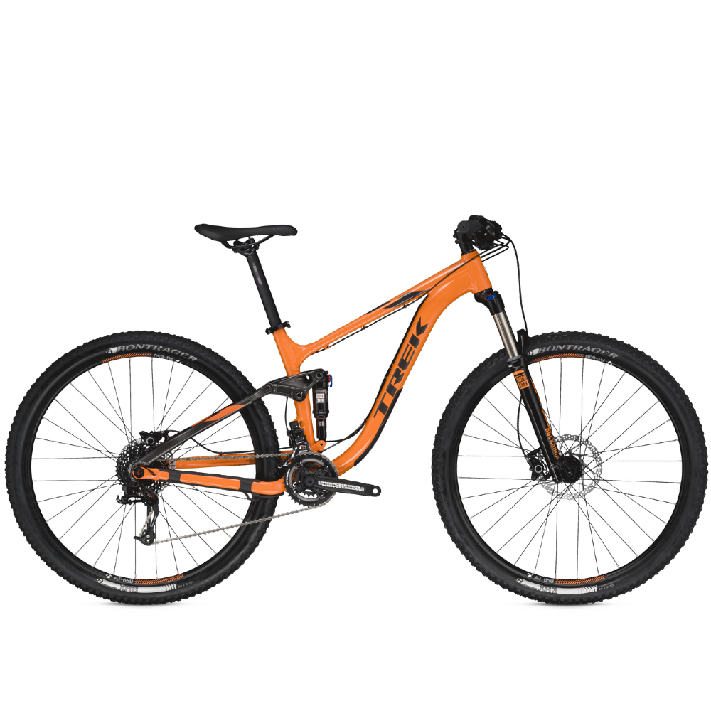

| 
|
Bicicleta de montaña
|
- Esta BTT de 27,5" ha sido concebida para tus travesías en BTT, todo el año, de 2 a 3 horas.
- Disfruta del confort de la suspensión 120 mm delantera y trasera de la BTT ST 530 S. Para adaptarte a las irregularidades
del terreno, el monoplato y los frenos disco hidráulicos serán tu mejor aliado
|
Alquilar
|